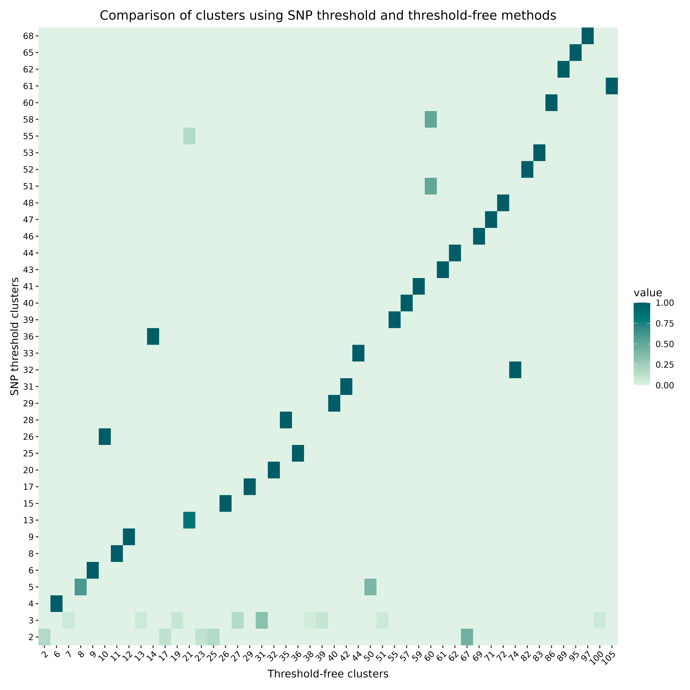
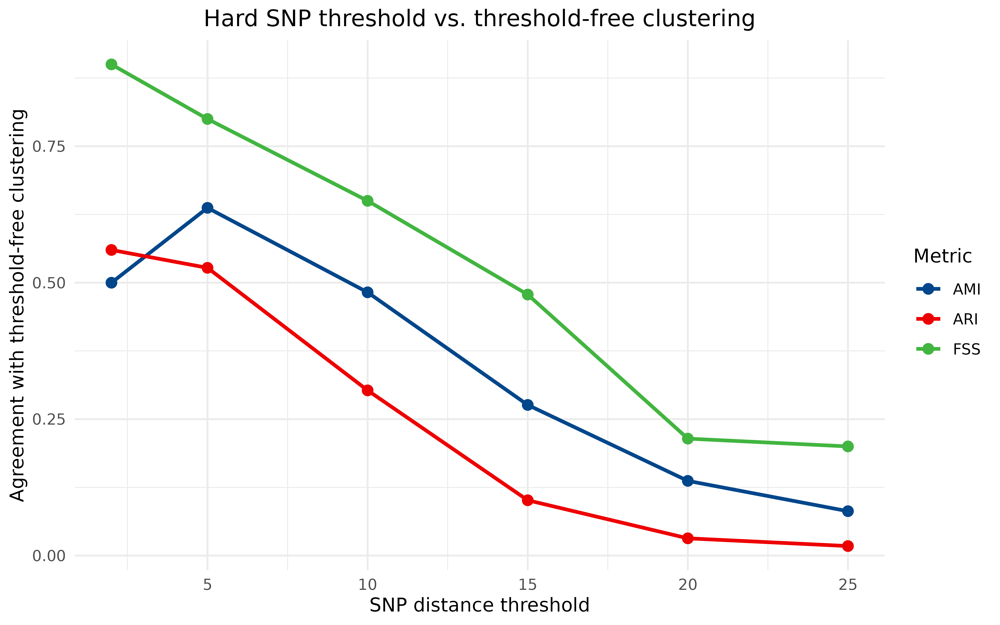

Comparing cluster assignments
Source:vignettes/articles/cluster_comparison.Rmd
cluster_comparison.RmdThis article goes into more detail on comparing different
transmission cluster assignments. Since hospitraceR
provides different methods for generating transmission clusters, one of
the natural questions is to try and compare the clusters generated by
these different methods. In some cases, we might want to compare the
clusters generated by slightly different subsets of the data as well.
For these purposes, hospitraceR provides a few
complementary ways of comparing two cluster assignments:
- a visual comparison of the isolates shared between
clusters, via
hospitraceRVisualize::plot_jaccard_similarity_heatmap(); - two partition-similarity statistics that summarise the agreement between two clusterings in a single number, the Adjusted Rand Index (ARI) and the Adjusted Mutual Information (AMI), both built on top of a contingency table of shared isolates; and
- an epidemiological concordance metric, the fraction of converts with the same source (FSS), which asks whether the two clusterings agree on who infected whom, not just on how the isolates are grouped.
Throughout, we compare the two clusterings produced in the introductory article:
clusters_snp, from the hard 10-SNP threshold method, and
clusters_sv, from the threshold-free shared-variant method
of Hawken et al. (2022).
Visualizing the fraction of shared isolates
One of the simplest ways to compare two cluster assignments is to
visualize the fraction of isolates that are shared between the two
clusters. This can be done using the
hospitraceRVisualize::plot_jaccard_similarity_heatmap()
function. This function takes in two cluster assignments and returns a
heatmap showing the overlap between the clusters by indicating the
proportion of isolates in each cluster that are also present in the
clusters generated by the other method. Specifically, it calculates the
Jaccard similarity index for each pair of clusters, which is defined as
the size of the intersection of the two clusters divided by the size of
the union of the two clusters. We can calculate the Jaccard similarity
index for each pair of clusters as:
J(A, B) = \frac{|A \cap B|}{|A \cup B|}
where A and B are the two clusters, |A \cap B| is the size of the intersection of the two clusters, and |A \cup B| is the size of the union of the two clusters. What does this tell us? It tells us the proportion of isolates in cluster A that are also present in cluster B. For comparing cluster assignments, we can look at all such pairs of clusters and visualize the similarity between them.
Before we can use this function, we remove any singleton clusters, which are clusters that contain only one isolate – these are not very useful for comparison. We keep the singleton-removed clusters in new variables so that the full assignments remain available for the metrics computed later in this article:
# remove singleton clusters from both clustering methods (for plotting only)
clusters_snp_shared <- remove_singleton_clusters(clusters_snp)
clusters_sv_shared <- remove_singleton_clusters(clusters_sv)
# compare the clusters
plot_jaccard_similarity_heatmap(clusters_snp_shared, clusters_sv_shared) +
# change the color palette
scale_fill_paletteer_c("grDevices::Mint", direction = -1) +
# add a title
ggtitle("Comparison of clusters using SNP threshold and threshold-free methods") +
# add x and y axis labels
xlab("Threshold-free clusters") +
ylab("SNP threshold clusters") +
# center the title and rotate x axis labels
theme(
plot.title = element_text(hjust = 0.5),
axis.text.x = element_text(angle = 45, hjust = 1)
)
#> → heatmap built with `geom_tile()`
The heatmap is a useful overview, but it does not give us a single number we can track as we change a clustering parameter or swap in a different subset of the data. For that, we turn to the contingency table and the summary statistics built on top of it.
The contingency table of shared isolates
Both the Jaccard heatmap and the summary statistics below are built
from the same object: a contingency table that
cross-tabulates the two cluster assignments. Each cell counts how many
isolates fall into a given cluster under the first assignment
and a given cluster under the second.
cluster_contingency_table() computes it directly. Only
isolates present in both assignments are counted; if the two assignments
are not over exactly the same set of isolates, the function warns and
restricts itself to the common isolates.
cont_table <- cluster_contingency_table(clusters_snp, clusters_sv)
dim(cont_table)
#> [1] 81 110Because the raw assignments place every unclustered isolate in its own singleton cluster, the full table is large and almost entirely zero, with most of its mass on a near-diagonal of 1 \times 1 blocks. The structure is much easier to see if we restrict to the non-singleton clusters and look at a corner of the table. The diagonal blocks – clusters of size two and three that both methods recover identically – are where the two clusterings agree:
cont_table_shared <- cluster_contingency_table(clusters_snp_shared, clusters_sv_shared)
cont_table_shared[1:8, 1:8]
#> 2 6 7 8 9 10 11 12
#> 2 3 0 0 0 0 0 0 0
#> 3 0 0 3 0 0 0 0 0
#> 4 0 4 0 0 0 0 0 0
#> 5 0 0 0 3 0 0 0 0
#> 6 0 0 0 0 2 0 0 0
#> 8 0 0 0 0 0 0 2 0
#> 9 0 0 0 0 0 0 0 2
#> 13 0 0 0 0 0 0 0 0Reading a table like this directly does not scale: the example data alone produces a table with over a hundred rows and columns. What we want is a single number that summarises how well the row partition and the column partition agree. That is exactly what the Adjusted Rand Index and Adjusted Mutual Information provide.
Adjusted Rand Index (ARI)
The Adjusted Rand Index measures how often the two clusterings agree on whether a pair of isolates belongs together, corrected for the agreement we would expect from two random partitions of the same sizes (Hubert and Arabie, 1985). It ranges from -1 to 1: a value of 1 means the two clusterings are identical, 0 means they agree no more than chance, and negative values mean they agree less than chance.
There are two entry points. adjusted_rand_index() takes
the two cluster assignments directly and builds the contingency table
for you:
adjusted_rand_index(clusters_snp, clusters_sv)
#> [1] 0.3026967If you already have a contingency table – for example because you are
computing several metrics from it, or sweeping over a parameter and want
to avoid rebuilding the table each time – you can call
ari_from_contingency() on the table instead.
Adjusted Mutual Information (AMI)
The Adjusted Mutual Information measures agreement from an information-theoretic angle: how much knowing an isolate’s cluster under one assignment tells you about its cluster under the other, again corrected for chance (Vinh, Epps and Bailey, 2010). It ranges from 0 (the two clusterings are independent) to 1 (they are identical). Where ARI counts agreement over pairs of isolates, AMI is sensitive to how the isolates are distributed across clusters of different sizes, so the two metrics need not move together.
As with ARI, there is a convenience wrapper that takes the
assignments directly and a variant (ami_from_contingency())
that works from a precomputed contingency table:
adjusted_mutual_information(clusters_snp, clusters_sv)
#> [1] 0.4823642Both ARI and AMI here are well above what we would expect by chance, confirming the visual impression from the heatmap: the two methods agree on many more isolates than by chance. However, they’re not close to 1, which means there are still significant composition differences that may be interesting.
Epidemiological concordance: fraction of converts with the same source
ARI and AMI are purely structural — they compare partitions without any knowledge of the underlying epidemiology. But in a transmission study, the question we actually care about is often not “are the clusters the same shape?” but “do the two methods agree on who acquired the organism from whom?”. The fraction of converts with the same source (FSS) answers exactly this.
A convert (also referred to as an acquisition) is a
patient who is inferred to have acquired the organism during their stay
(rather than carrying it on admission). The source of a convert
is an admission-positive patient to whom the convert’s acquisition can
ultimately be traced back. hospitraceR derives these roles
from each clustering via cluster_patient_categorization(),
using admission status, surveillance cultures and collection dates.
fraction_convert_same_source() asks the question: for the
set of common converts between two clusterings, how many of them have
the same inferred source in both clusterings?
fss <- fraction_convert_same_source(
clusters_snp,
clusters_sv,
dna_aln,
dna_pt_labels,
adm_seqs,
dates,
surv_df,
converts_without_assigned_source = TRUE
)
fss
#> [1] 0.65So even where the two methods carve up the isolates slightly differently, they agree on the inferred source for a large majority of converts.
There can be cases where the two clustering methods are built using
slightly different epidemiological inputs. In such cases, the
convenience wrapper fraction_convert_same_source() is not
appropriate because it would categorize both clusterings against a
single set of epidemiological inputs. Instead, you should build an
isolate lookup for each clustering using
get_isolate_lookup() and then pass the two lookups to
fraction_convert_same_source_from_lookups().
Putting it together: sweeping across SNP thresholds
The summary statistics come into their own when we want to compare many clusterings at once.
At each threshold we build the contingency table once and reuse it
for ARI and AMI, which is why the *_from_contingency()
entry points are convenient here:
thresholds <- c(2, 5, 10, 15, 20, 25)
sweep_df <- do.call(rbind, lapply(thresholds, function(thr) {
clusters_thr <- get_tn_clusters_snp_thresh(snp_dist, thr)
# build the contingency table once, reuse for ARI and AMI
ct <- cluster_contingency_table(clusters_thr, clusters_sv)
fss <- fraction_convert_same_source(
clusters_thr,
clusters_sv,
dna_aln,
dna_pt_labels,
adm_seqs,
dates,
surv_df,
converts_without_assigned_source = TRUE
)
data.frame(
threshold = thr,
ARI = ari_from_contingency(ct),
AMI = ami_from_contingency(ct),
FSS = fss
)
}))
sweep_df
#> threshold ARI AMI FSS
#> 1 2 0.56000482 0.49994662 0.9000000
#> 2 5 0.52724828 0.63716676 0.8000000
#> 3 10 0.30269669 0.48236421 0.6500000
#> 4 15 0.10134457 0.27600420 0.4782609
#> 5 20 0.03159573 0.13685107 0.2142857
#> 6 25 0.01744880 0.08133707 0.2000000To plot all three metrics together, we reshape the results into long format and draw one line per metric:
sweep_long <- pivot_longer(
sweep_df,
cols = c(ARI, AMI, FSS),
names_to = "metric",
values_to = "value"
)
ggplot(sweep_long, aes(x = threshold, y = value, color = metric)) +
geom_line(linewidth = 1) +
geom_point(size = 2.5) +
scale_color_paletteer_d("ggsci::lanonc_lancet") +
labs(
x = "SNP distance threshold",
y = "Agreement with threshold-free clustering",
color = "Metric",
title = "Hard SNP threshold vs. threshold-free clustering"
) +
theme_minimal() +
theme(plot.title = element_text(hjust = 0.5))